TopDown Engine（以下、TDE）のデモは、四角いデモ用プレイヤーがPrefabとしてインポートされています。このデモ用プレイヤーを、自作したプレイヤーに置き換えるのが今回の内容です。
実際にゲームを作成する場合は、このデモ用プレイヤーを自作のスプライトシートなどから作成したプレイヤーに変更するか、既存のAssetなどをインポートすることになるでしょう。新規のオブジェクトとしてインポート・アタッチする場合、アタッチ時点でオブジェクトをPrefab化してあると扱いが楽なので、ここではPrefab化してからアタッチすることとします。
インポートの方法は以前の別記事で触れているとおりなので、ここでは割愛します。
Minimal2Dのテンプレートを用いてシーンを作成します。具体的な手順は以前の別記事で触れているので、ここでは割愛します。
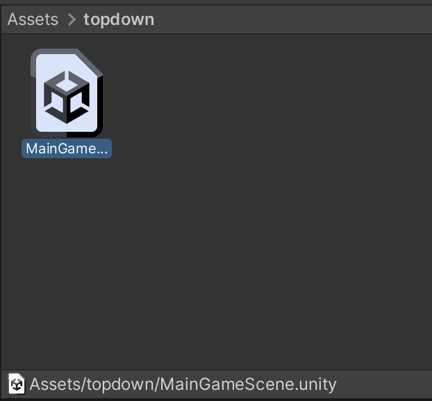
ここではAssetsフォルダ下に「topdown」というフォルダを新規作成し、コピーしてきたシーンを「MainGameScene」という名前にリネームして保存しましました。一度このタイミングでゲームを実行してみて、正常に動作することを確認しておくと良いでしょう。WASDでテンプレートのデモ用キャラクターを動かせるので、試してみると吉。以降は、基本的にこのシーンを編集することになります。
ここでは、プレイヤー用オブジェクトのために自作したスプライトシートをインポートします。
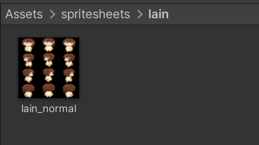
ここではAssetsフォルダ配下にキャラクター用スプライトシートのフォルダを新規作成し、その中にスプライトシートをインポートしました。
インポートした直後のスプライトシートは、Inspectorウィンドウを見るとTexture Typeが「Default」になっている（はず）なので、この設定を「Sprite（2D and UI）」に変更します。さらに、今回のスプライトシートは32x32のスプライトを集めたものなので、32x32で各スプライトごとに切り分けておきます。
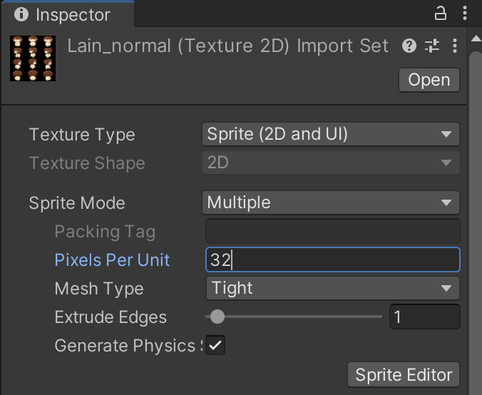
Sprite Modeを「Multiple」に、Pixels Per Unitを32に変更してApplyしてから、Sprite Editorを使ってスプライトの切り分けを行います。
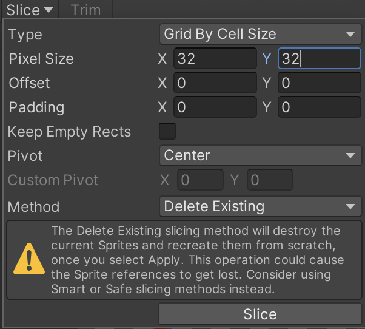
おなじみのSprite Editorではいつもの設定「Grid by Cell size」で32x32に設定、Sliceボタンを押してスプライトを切り分けます。正常に切り分けられたらApplyします。
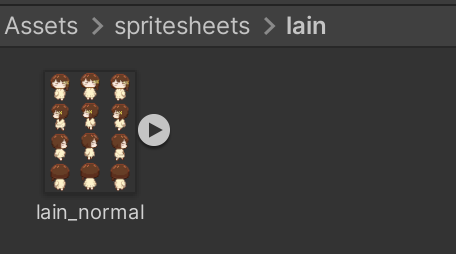
スプライトの切り分けが終わると、Projectウィンドウのオブジェクトに三角の書かれた丸いアイコンが、スプライトシートの右側に表示されます。
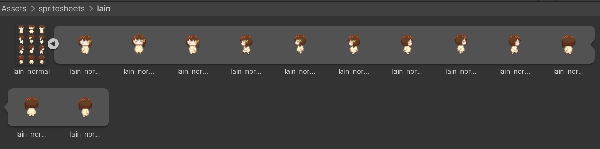
このアイコンをクリックすると、切り分けた各スプライトがそれぞれ個別に表示されます。ここまで来ればスプライトシートの編集は終わりです。本来だと切り分けたスプライトを組み合わせてアニメーションの設定などを行ったりするのですが、ここではスプライトシートの導入だけとしておきます。
切り分けたスプライトシートをシーンに追加します。このとき、追加するのにドラッグアンドドロップする先はHierarchyウィンドウ一択であることに注意です。スプライトシートをSceneウィンドウのドラッグアンドドロップしてはいけません。Sceneウィンドウに対しドラッグアンドドロップしてスプライトシートを追加すると、追加と同時にアニメーションの設定を行うファイルを生成しようとします。
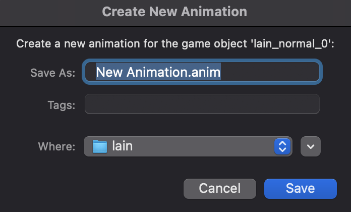
上記のようなウィンドウが表示されたとき、Saveを押すとアニメーション用のファイルが生成されます。それだけなら支障はあまりないのですが、追加したスプライトシートにAnimatorコンポーネントが自動的に追加されます。このコンポーネントがオブジェクトに付与されていると、あとでTDEにオブジェクトをアタッチするときにエラーが発生します。一応エラーを回避する方法もあるのですが、最初からエラーの遠因となるような要素はなるべく除外しておきたいので、ここではHierarchyウィンドウに対してオブジェクトを追加するようにしましょう。
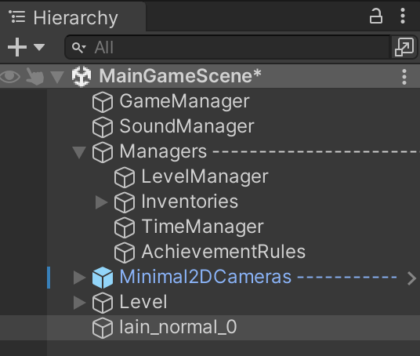
一番下のオブジェクトが、先ほど切り分けたスプライトシートをドラッグアンドドロップして追加したプレイヤー用オブジェクトです。
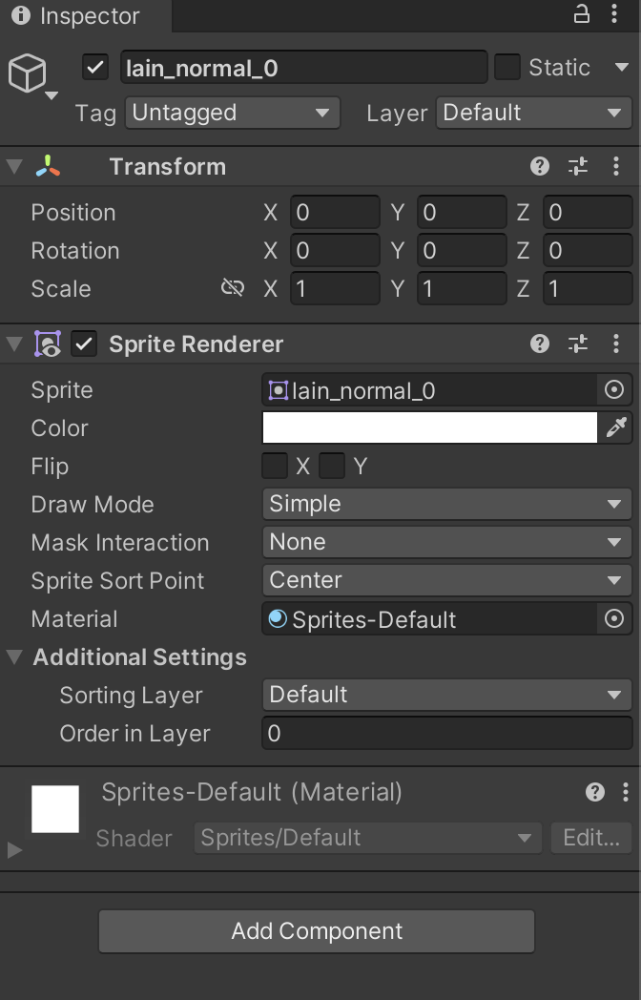
Inspectorウィンドウを見ると、Animatorコンポーネントが追加されていないことがわかります。
TDEには、プレイヤーキャラクター用の各種設定が可能なコンポーネントを用意しています。便利なことに、このコンポーネントを付与して多少の設定を行うだけでプレイヤー移動などの基本的な操作が可能になります。
先ほど追加したプレイヤー用オブジェクトを選択し、Inspectorウィンドウの「Add Component」をクリックします。
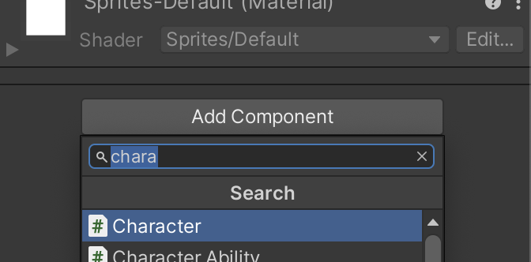
ここでは検索窓に「chara」などと入力して、「Character」コンポーネントを選択します。このコンポーネントが、TDEによって用意されたプレイヤーやNPC用のコンポーネントです。
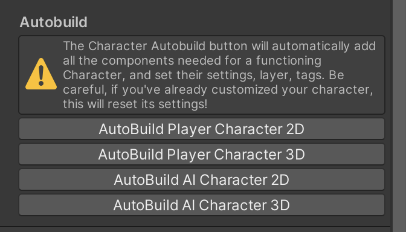
Characterコンポーネントを付与すると、「Autobuild」という項目が用意されます。これは、表示されている各種ボタンをおすことで、そのオブジェクトに対して「2D（or3D）のプレイヤー（orNPC）に必要な各種コンポーネントの付与や設定」を自動的にやってくれる便利機能です。ここでは対象がプレイヤー用の2Dオブジェクトなので「Autobuild Player Character 2D」を押す。
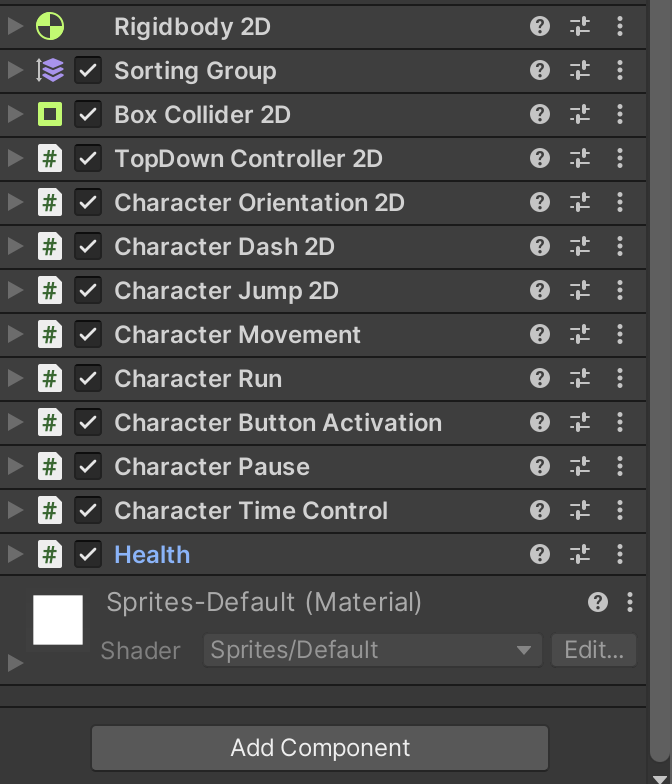
ボタンを押すと、Colliderなどのオブジェクトに必要なコンポーネントが付与され、デフォルト値が設定されます。
付与されるコンポーネントが多いため、設定できる要素はかなり多いです。が、ここでは基本的にデフォルト値を採用します。例外として、「Ridibody 2D」配下にある「Interpolate」という設定項目はNoneに設定しておきます（デフォルト値はInterpolate）。
TDEのシーンには、もともと基本的なレイヤー設定が準備されています。
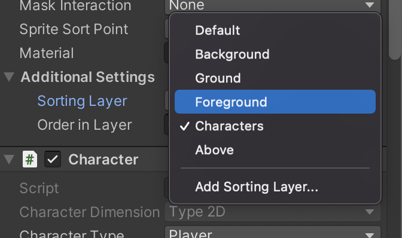
Sprite RendererのAdditional SettingsにあるSorting Layerを見ると、すでに背景用やキャラクター用のレイヤーが存在しています。追加したオブジェクトはたいていの場合、これらの準備されたレイヤーを設定してやればいいはずです。
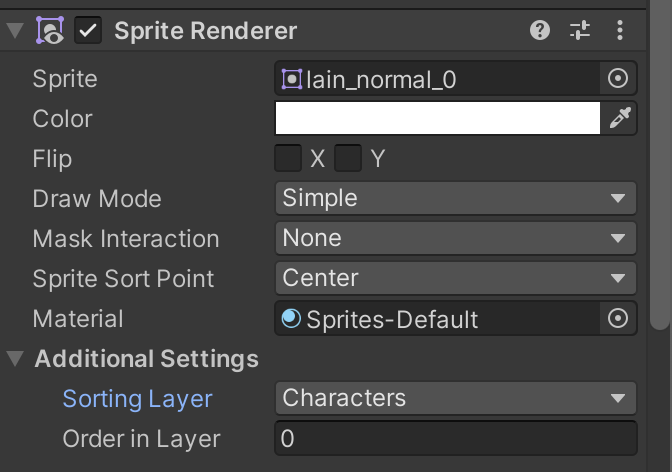
ここでは追加したオブジェクトがプレイヤーであるため、Sorting Layerを「Character」に設定します。Order in Layerは、同一レイヤー内に複数のオブジェクトが存在する場合に指定すればいいでしょう。現状では追加したオブジェクト以外には同一レイヤー内に他オブジェクトが存在しないため、ここでは設定せずデフォルト値の0をそのまま採用します。
ここまでの段階で一度試しにゲームを実行してみます。
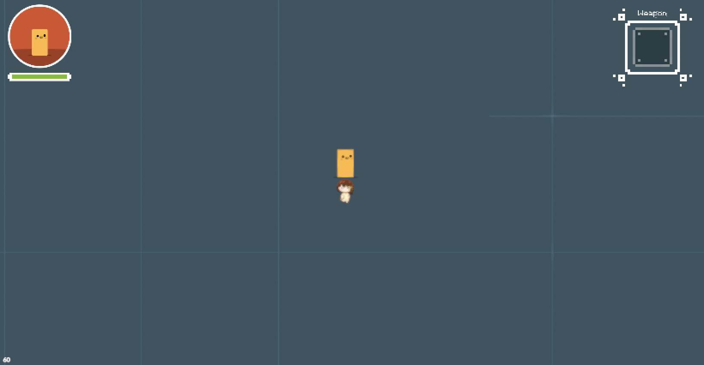
この時点で、スプライトシートをベースにしたオブジェクトを追加した以外はもとのシーンをそのまま採用しているので、シーンに設定されているデモ用プレイヤー（黄色い四角いヤツ）も表示されています。デモ用プレイヤーと自作したプレイヤーはどちらもWASDキーで移動できるはずなので、試しに動かしてみます。多分移動するスピードなどが異なるはずですが、それはあとで調整できるのでここでは気にしなくて大丈夫です。Fキーを押すと一瞬ダッシュします。
TDEではプレイヤーをPrefab化して、そのPrefabをLevel Managerに設定することを推奨しています。現状ではHierarchy直下にプレイヤーのオブジェクトが存在しているため、ここではPrefab化してLevel Managerに設定します。
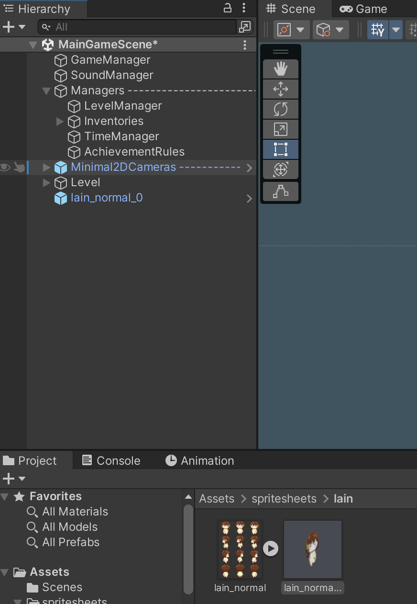
プレイヤーのオブジェクトを、HierarchyウィンドウからProjectウィンドウにドラッグアンドドロップします。Hierarchyウィンドウのプレイヤーオブジェクトが青くなったら、そのオブジェクトはPrefab化できています。
プレイヤーのPrefabは、後々のためにPrefabだとわかるようリネームしておくと良いでしょう。Prefab化が完了したら、Hierarchyウィンドウにいるプレイヤーオブジェクトは不要なので削除しておきます。
次にHierarchyウィンドウでManagerを選択します。
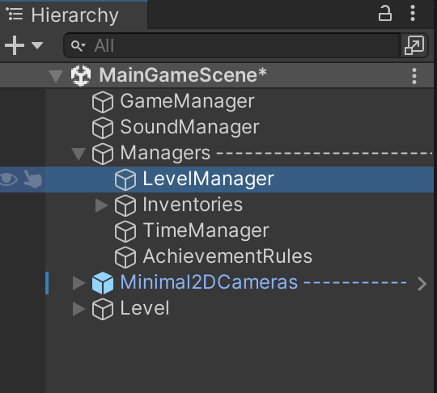
配下にLevel Managerがいるはずなので選択し、Inspectorウィンドウを参照します。
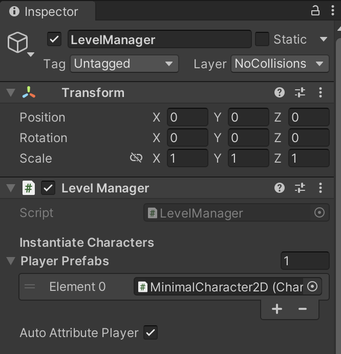
Player Prefabsというメニューがありますが、ここにプレイヤーとして利用したPrefabを設定します。現状ではデモ用プレイヤーのPrefabが設定されているので、これを先ほど作成したプレイヤー用Prefabと差し替えます。
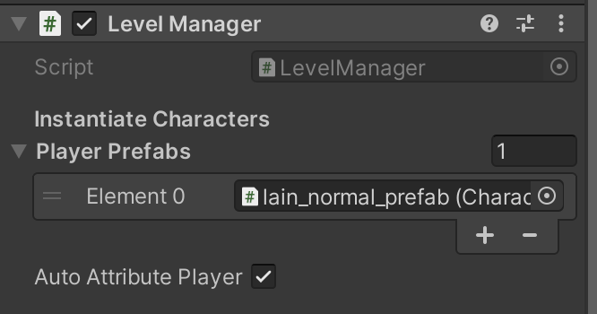
プレイヤー用Prefabを、ProjectウィンドウからLevelManagerの「Player Prefabs」部分にドラッグアンドドロップします。もともとElement 0として作成されている枠にドロップすれば大丈夫です。
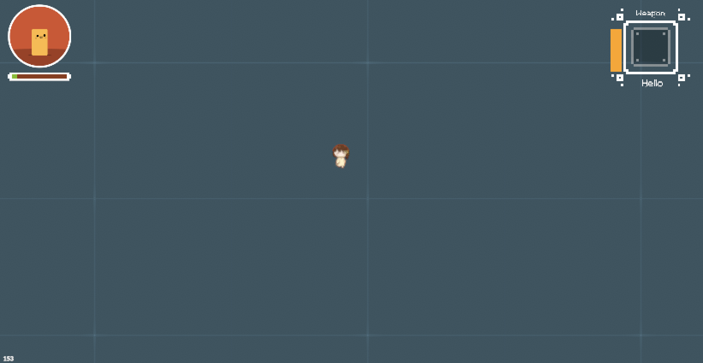
ここで再度ゲームを実行してみます。今度はプレイヤーをデモ用プレイヤーから自作のPrefabへ差し替えたため、黄色い資格のデモ用プレイヤーが表示されなくなったはずです。
これで、自作のスプライトシートからプレイヤーのオブジェクトを配置できました。
ここまででプレイヤーのオブジェクト配置は完了したのですが、ゲーム制作や進行のためにオブジェクトの調整を行います。
デフォルトの状態では、プレイヤーのスプライトと同じサイズでColliderが設定されています。
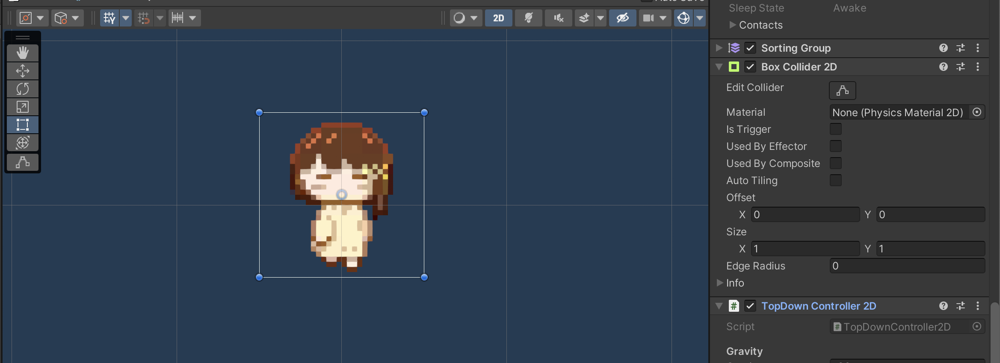
これはBox Collider 2DのSizeがXYともに1となっているためで、「縦横がそれぞれオブジェクトのサイズの1倍で設定されている」ということを意味しています。動作確認を行うにはこれで問題ありません。ただし、実際にゲームを実行する際には、少し調整が必要になるかもしれません。
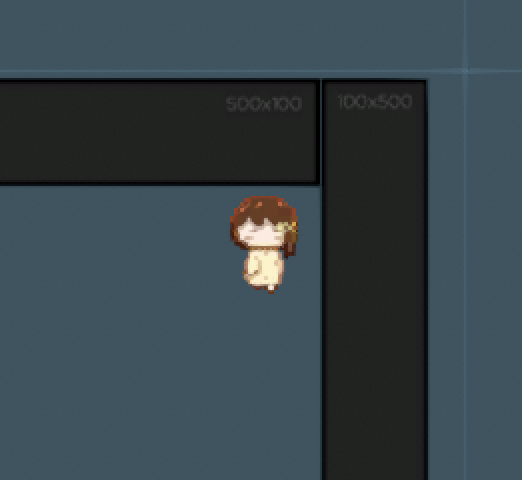
XYがそれぞれ1のデフォルト設定で壁と接触させると、上記のようになります。見た目上はなんとなくもう少し壁に向かって進めそうな感じがします。が、実際にはこの位置以上に上方向や右方向に進めません。このように、「見た目には接触していないように見えるがColliderの設定数値上は接触している」ことになります。この感覚と実際の挙動のギャップを埋めるために、Colliderを最適な値に調整します。
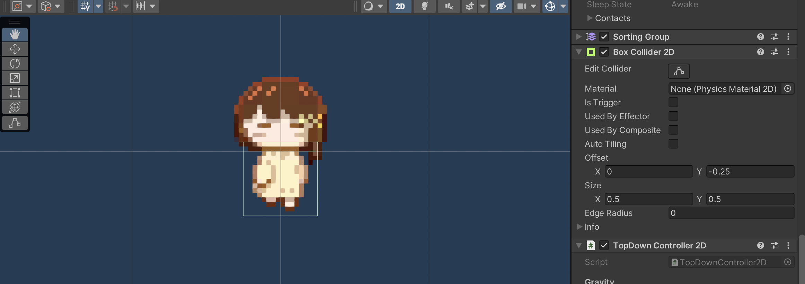
具体的には、キャラクターの下半身を囲うような位置にColliderが設定されるよう調整します。黄緑色の細い線で囲われている部分がCollider設定された位置です。
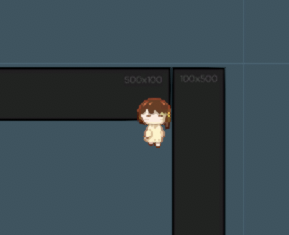
Colliderを調節したことで、デフォルト設定のときよりも「壁に密着している」感じが出ています。
スプライトシート表示時の設定がデフォルトだと、ドット絵が滲んで見えることがあります。
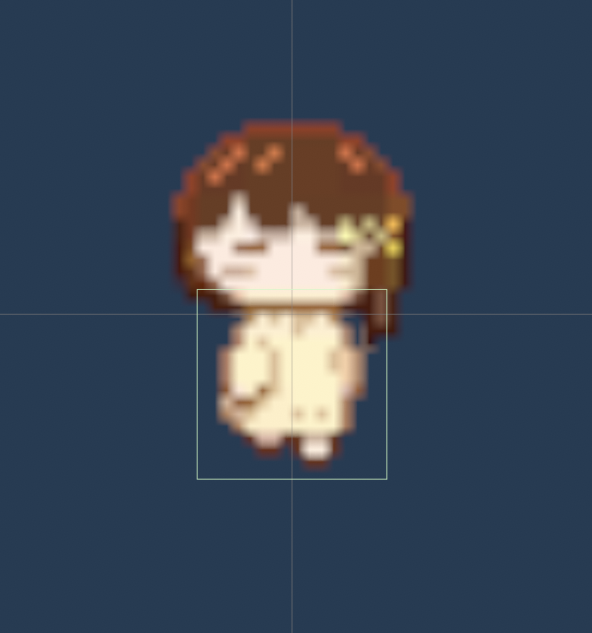
上記はPrefab化した後の表示だが、ドット絵が滲んでいるのがわかるかと思います。これだと見た目がイマイチです。
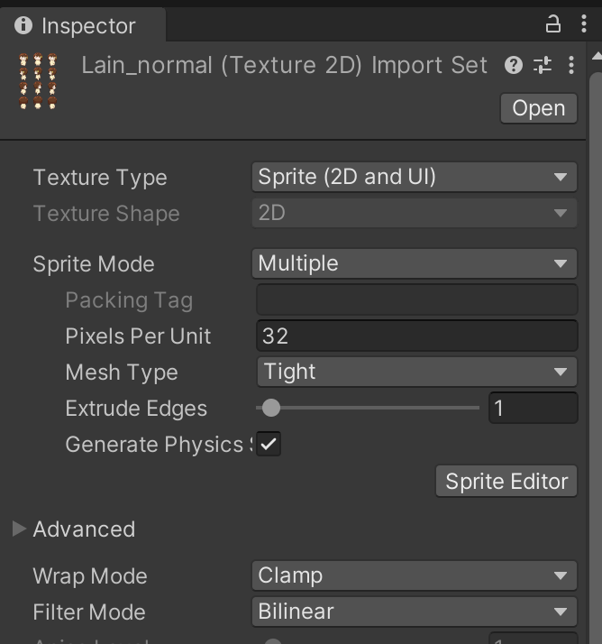
これを解消するには、スプライトシートを選択したときのInspectorウィンドウ＞Advanced＞Filter Modeの値を「Bilinear」から「Point (no Filter)」に変更します。
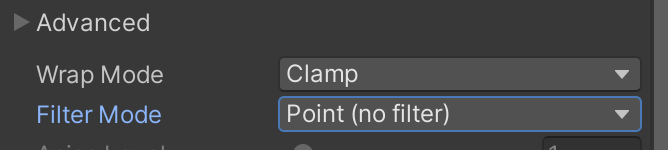
変更したらApplyボタンを押します。
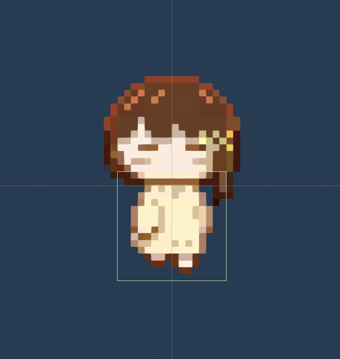
滲んでいたドット絵が、はっきり表示されているのがわかるかと思います。
この設定変更は、Prefab作成におけるどのタイミングでも有効です。なので、思い出したタイミングで変更すれば良いと思います。
必要に応じてプレイヤーの移動速度を調節します。今回は「デフォルトだとちょっと早いなー」と感じたため、遅くする方向で調節しています。
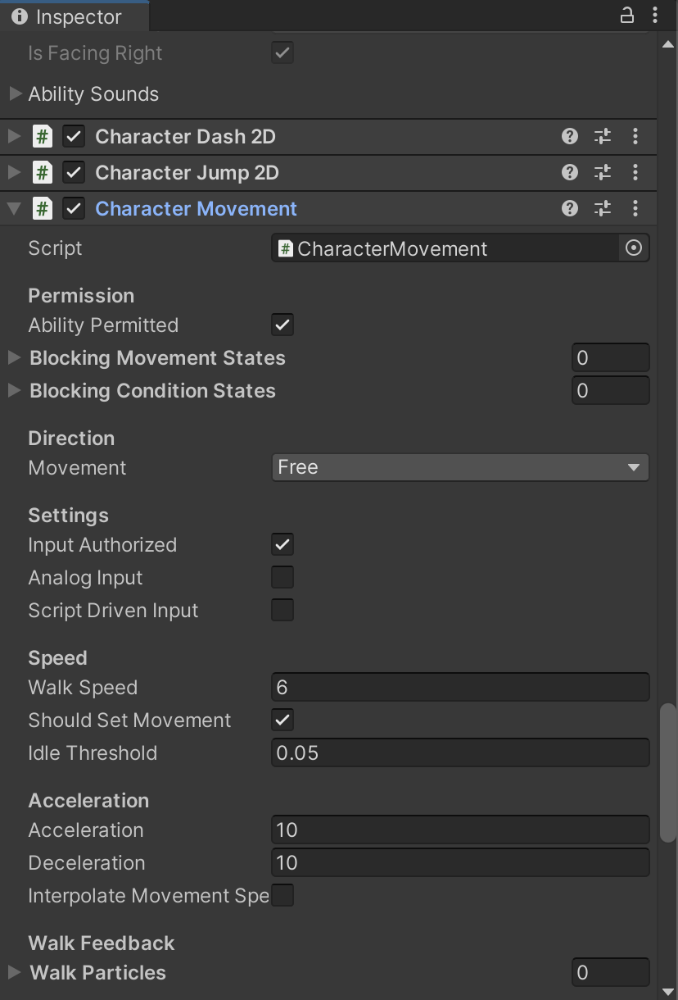
移動速度を調節するには、作成したプレイヤーのPrefabのInspectorウィンドウからCharacter Movement＞Speed＞Walk Speedの値を編集します。
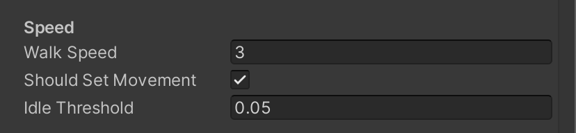
デフォルト値は6ですが、3に変更しました。
変更したら、再度ゲームを実行してみましょう。移動速度が変化しているはずです。
今回は、デモ用プレイヤーを自作のプレイヤーに置き換えるところまでを行いました。まだまだゲームとしての体裁は整っていませんが、ぼちぼちやっていきましょう。
次回は、今回追加したプレイヤーのアニメーションを設定し、キー操作にて歩行モーションを表示するところをやる予定です。